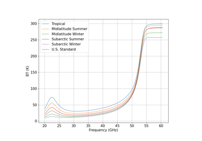
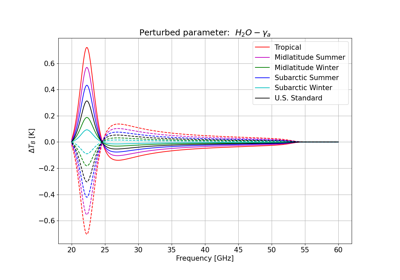
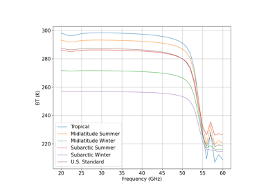
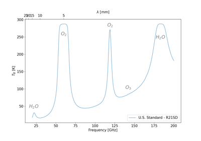
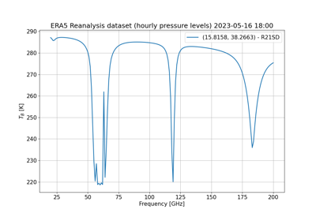
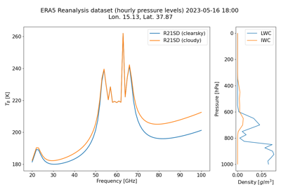
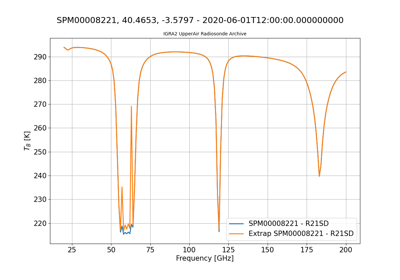
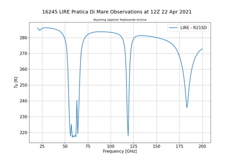
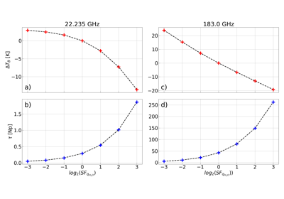
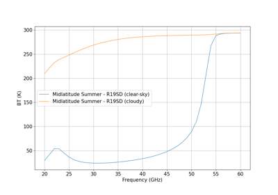

Gallery example#
This gallery shows examples of pyrtlib functionality. Community contributions are welcome!

Performing Downwelling Brightness Temperature calculation

Performing sensitivity of spectroscopic parameters

Performing Upwelling Brightness Temperature calculation

Performing Downwelling Brightness Temperature calculation with Ozone

Performing Upwelling Brightness Temperature calculation using ERA5 Reanalysis Observations.



Performing Upwelling Brightness Temperature calculation using Wyoming Upper Air Observations.

Logarithmic dependence of monochromatic radiance at 22.235 and 183 GHz

Performing Downwelling Brightness Temperature calculation in cloudy condition.